吃完午餐, 循偶來3號小路一直走, 穿過表善海灘, 沿小徑穿過山坡, 過了鹽膜沙灘後, 沿岸都是黑漆漆的岩石, 走出了小徑, 來到一條馬路。接著沿馬路旁的步道走。
濟州島有「三多」- 石頭多、風多、女人多。因為整個濟州就是由於火山爆發所造成的, 所以濟州石頭特別多, 走走這偶來3號小路便知道。其實還有雨多, 所以應該是「四多」才是!

올레휴게쉼터 (偶來躲避所)
沿馬路旁的偶來3號小路走了一會, 大雨突然從天傾瀉而下, 看見步道前面不遠處有一間小屋, 便急急走到那裡避雨, 小屋原來是「올레휴게쉼터」, 好像是偶來躲避所之類的建築物。來到大門前, 看見屋內有桌子和椅子, 滿心歡喜的推門進內, 原來玻璃門上了鎖的! 落空一場。
幸好大門上有少許上蓋, 總算可以作暫時避雨之用。
「올레휴게쉼터」大門外的風景很好, 可以眺望大海。上午遊覽的表善里漁港和表善防波堤就在海灣的對岸。
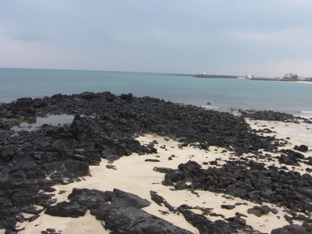
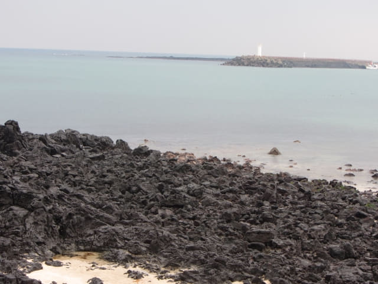
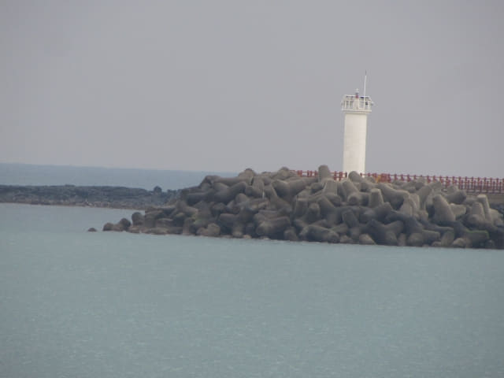
在「올레휴게쉼터」大門下等了幾分鐘, 雨勢漸漸減弱, 又可以繼續行程。
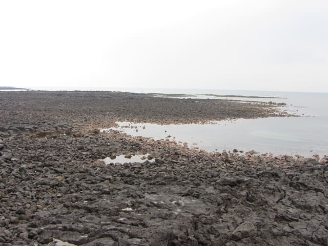
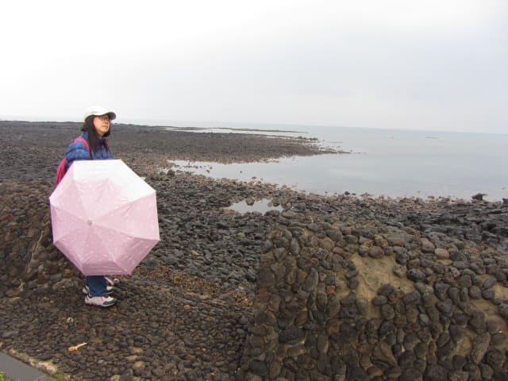
海灣對岸的表善防波堤白燈塔和黑色石灘白燈塔。上午才往那裡遊覽, 望望右邊遼闊長長的海灣, 不經不覺間已經走了很多路。
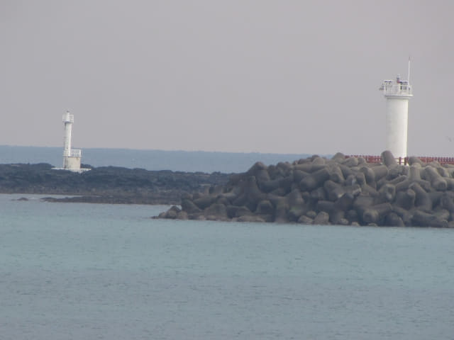
繼續往前走, 天氣十分不穩定, 轉眼又下起雨來。
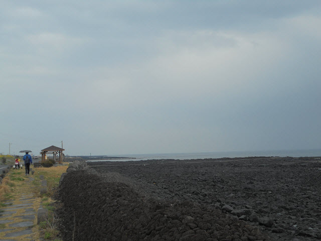
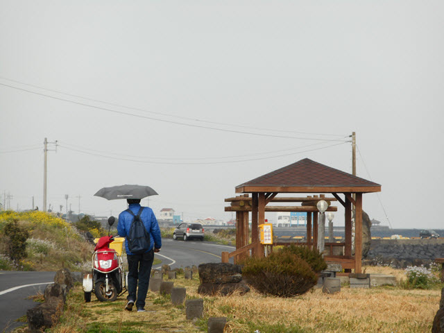
又來到另一個偶來躲避所。會否是這段路比較空曠, 當遇上天氣惡劣時, 情況可能十分恐怖, 所以躲避所比較多。
突然間, 雨又停了, 還灑下幾絲陽光。大佬, 落夠 La, 吳好再玩啦!
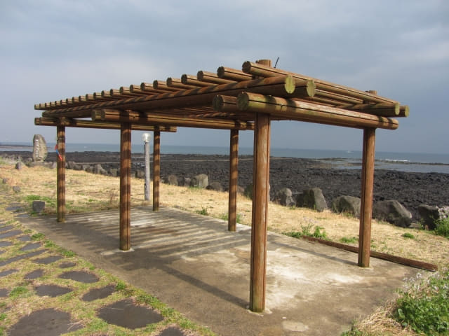
沿途風景不錯的。
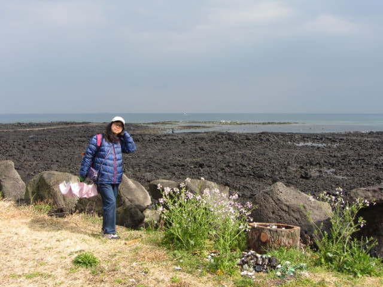
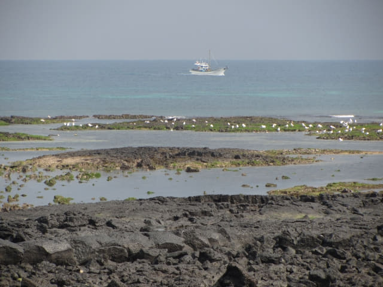
不知「하천마」是什麼意思, 應該是地方名稱吧。
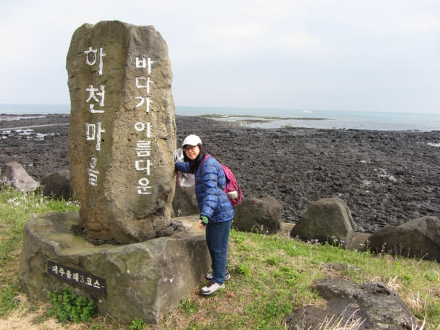
風景十分優美。
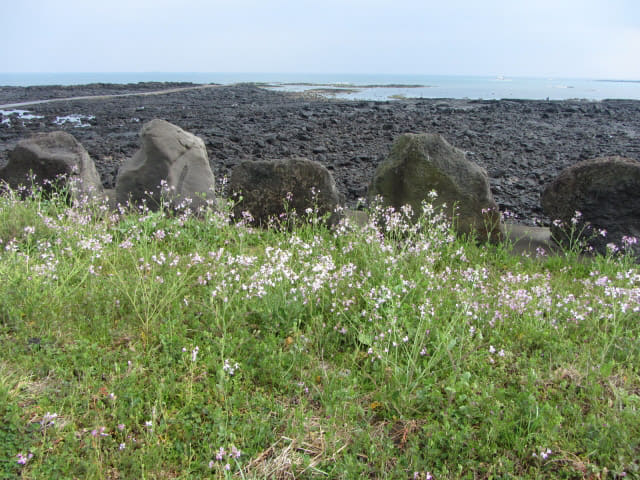
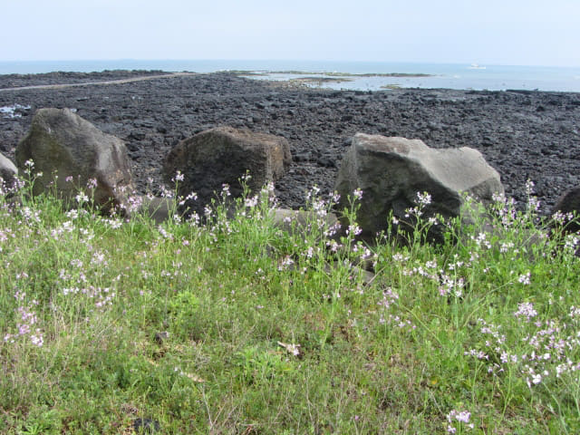
通往海中的步道, 一直帶領我往前望。覺得很神秘, 很有意思, 所以呆著看了一會。
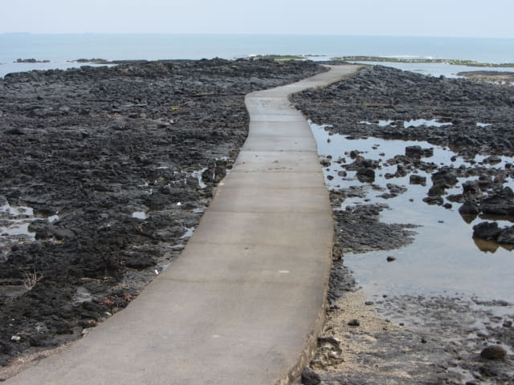
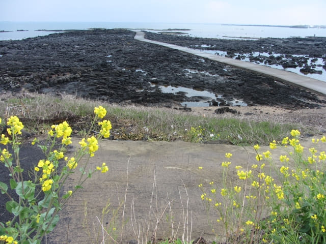
黑色的石灘, 表現出另一種美, 就是看完又想看的感覺。
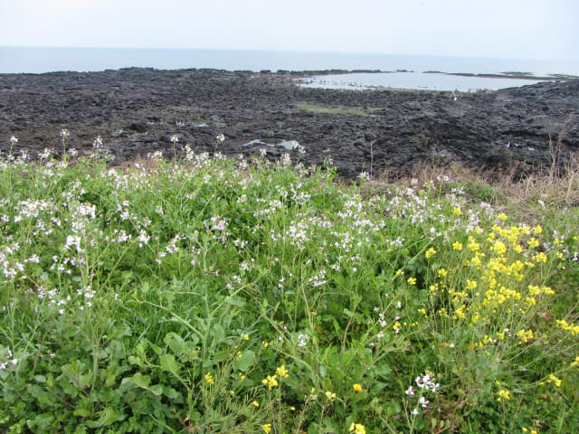
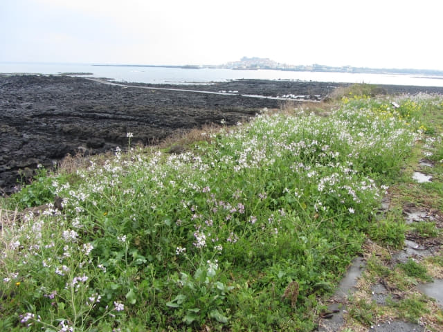
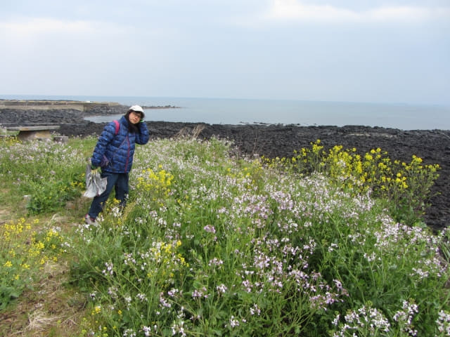
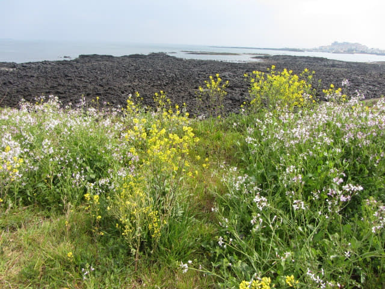
川尾川出海口漁港
來到一個漁港。因為在川尾川的出海口, 所以我稱之為川尾川出海口漁港。
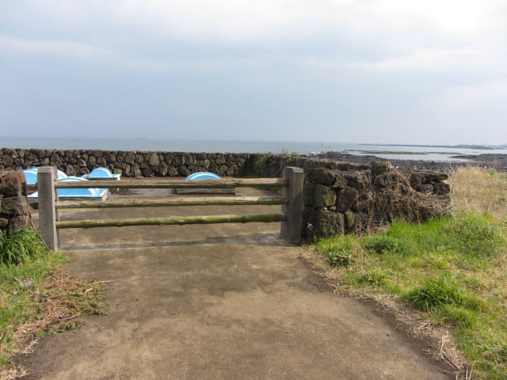